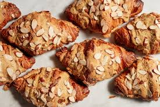

Buttery Almond Croissants

Preparation Time: 25 minutes
Cook Time: 15-18 minutes
Serving Size: 6 croissants
Transform day-old croissants into gourmet bakery-style almond croissants with this easy recipe! These croissants are filled with a
rich almond cream, baked until golden and crispy, and topped with a dusting of powdered sugar. Perfect for an elegant brunch or a
decadent treat with your morning coffee, these Buttery Almond Croissants taste like they came straight from a Parisian cafe!
Ingredients (Syrup):
- 1/2 cup water
- 1/4 cup granulated sugar
- 1/2 tsp almond extract
Ingredients (Almond Cream):
- 1/2 cup unsalted butter, softened
- 1/2 cup granulated sugar
- 1 cup almond flour
- 2 large eggs
- 1/2 tsp vanilla extract
- 1/2 tsp almond extract
- 1/4 tsp salt
Ingredients (Assembly):
- 6 croissants (day-old works best)
- 1/2 cup sliced almonds
- Powdered sugar, for dusting
Instructions:
- Preheat oven to 350°F (175°C) and line a baking sheet with parchment paper.
- Make the syrup: In a small saucepan, heat water and sugar over medium heat until sugar dissolves. Remove from heat and stir in almond extract. Let cool.
- Make the almond cream: In a bowl, beat butter and sugar until light and fluffy. Add almond flour, eggs, vanilla, almond extract, and salt. Mix until smooth.
- Slice croissants in half lengthwise. Brush each half lightly with the syrup.
- Spread a generous layer of almond cream on the bottom half of each croissant. Place the top half back on and spread a thin layer of almond cream on top.
- Sprinkle with sliced almonds and arrange on the baking sheet.
- Bake for 15-18 minutes, until golden brown and slightly crisp.
- Let cool for a few minutes, then dust with powdered sugar before serving.